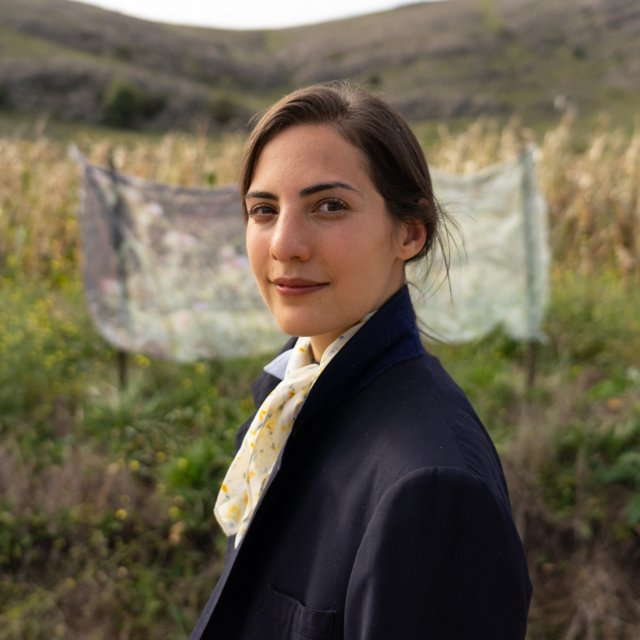

Mariela Paz Izurieta
Edición #3 | Líquenes y Hongos
A diferencia de otras residencias en las que participé, esta fue la primera vez en la que literalmente me embarqué y compartí el viaje de ida junto a quienes luego serían mis compañerxs de convivencia, yendo juntxs hacia el lugar que nos daría cobijo, una reserva ecológica situada en las sierras de pigüé.
Unas seis o siete horas de ruta en un domingo gris y lluvioso, con vientos que azotaban las ventanillas y que prometían mantenerse presentes durante los próximos días.
Fue en ése viaje que me enteré que el sitio al cual nos dirigíamos es uno de los puntos más fríos de la provincia de buenos aires, y que su clima, áspero, casi austral, se emparenta con el de las islas malvinas, casi dos mil kilómetros leyendo el mapa de arriba hacia abajo, motivo por el cual, quienes en la década de los ochenta fueron llevados allí a combatir una guerra librada en condiciones ridículas contra el imperio inglés, previo a ello fueron traídos a este mismo lugar al que yo me dirigía ahora para entrar en contacto, más bien empaparse, con estas condiciones físico - climáticas, a modo de entrenamiento, una escala previa, una plataforma; una instancia de preparación.
Justo unos pocos días antes se había conmemorado un nuevo aniversario de dicha batalla, el cual siempre deja un gusto amargo, un gusto casi sin gusto pero que está, que existe y que es feo, es metálico, es punzante y es feo, seguir hablando arrastrando esta sensación en la boca; sobre la mesa se vuelven a poner en cuestión debates que creíamos tener resueltos y con los que nos encontramos ahora lidiando todos los días; soberanía, orgullo, patriotismo, patria, estado, nación.
Sirve de algo algo de todo esto?, se siente?, importa?, se importa?, se exporta?, se come?, da de comer?, hay algo con respecto al dar, a la generosidad, a la abundancia, o por el contrario, a la austeridad, me guardo esto y espero, corto un trozo de pan, lo engullo y me guardo el resto, todos estos son comportamientos que forjamos, conductas.
Cosas que aprendimos a hacer o a no hacer, y que como sea, las naturalizamos, las empezamos a tomar como propias, como si fuesen partes nuestras, innegables, encarnamos modos de actuar y versiones que aceptamos de nosotrxs mismxs y estas pasan a configurar quienes somos a continuación.
De modo que si somos angurrientos, o si somos insaciables, es porque probablemente alguien o algo así nos lo enseñó, nos lo marcó, nos lo indicó.
Estoy hablando de que caminé por un lugar que ocupa un rol importantísimo en el mundo, una especie de nodo u nudo en la historia de la tierra, en la - literal - historia de la - literal - tierra, que hace que un montón de elementos y personajes orbiten en torno de sí y se distribuyan y se ordenen, como si hablásemos de un cierto magnetismo, lo cual tiene sentido porque estamos hablando de piedras, rocas y metales, estamos hablando de capas de corteza terrestre y de las formas de vida que se organizan a su alrededor.
Todavía estoy anonadada de haber pasado ahí días y noches, haber caminado por esos pastizales salvajes yendo a recolectar junto a mis compañerxs algunas flores de marcela, ramitas de carqueja, ir recordando en dónde encontrarlas cada vez, haber visto la luna crecer encima nuestro, como un redondel de papel glacé plateado que se despliega y que nos llama; vino un hombre a caballo, desde muy lejos, para señalárnosla.
Me cuesta mucho bajar al papel estas palabras, porque las ideas y las impresiones se me superponen y en mi afán de transcribirlas me es difícil asignarles prioridad. Voy a ser completamente arbitraria al hacerlo.
Quiero decir que cuando panchi (el cuidador de la casa, un tipo sin edad muy clara pero con una sonrisa enorme, un palito andante con botas y boina, una especie de don quijote gauchesco y pampeano) cruzó la sierra al galope, para venir a anunciarnos la llegada de la luna llena junto a su caballo favorito, aquel al que no le puso nombre por miedo a encariñarse con él, nos encontró a lxs cuatro llorando.
Ya la habíamos visto, obnubiladxs, la estábamos mirando en ése mismo momento, una fiebre nos subía por el cuerpo y las pestañas se nos quemaban, era algo imposible de tapar con las manos o de darle la espalda; era algo imposible de no ver.
Lo que hizo que nuestra mirada se mantenga fija, también, fue ver justo debajo de ella a ése caballo y a su jinete avanzando hacia nosotrxs en el horizonte, lento y persistente, cobrando volumen, desde una distancia imprecisa entre los pastos altísimos, las vacas correteando, las piedras desprendiéndose, los arroyitos salpicando, la figura de panchi in crescendo en un eterno fade in.
Estas dimensiones y estos tiempos ya no caben en nuestros relatos, en nuestra comprensión o en nuestra compresión de las anécdotas, pero aún existen, hay lugares de la tierra como éste, en donde existen.
En términos estrictamente geológicos, estas piedras vienen abriéndose paso desde hace 450 millones de años . la Sierra de Cura Malal forma parte de la provincia geológica de Ventania, y sus rocas se formaron en una gran cuenca de la era Paleozoica, de la que también formaban parte los actuales continentes africano y antártico.
300 millones de años atrás, éstas fueron sometidas a extremos esfuerzos compresivos, lo cual hizo que se plegasen, formando así un extenso cordón montañoso . luego, con la apertura del océano Atlántico, hace aproximadamente 200 millones de años, se inicia el período Mesozoico, y dicho cordón queda dividido; es por esto que puede apreciarse la continuación del Cordón de Ventania en el Cordón del Cabo en Sudáfrica y los Montes Ellworth en Antártida.
Este sistema serrano encuentra sus primeras referencias topográficas
en los primeros mapas de América del Sur
bajo el nombre de " Casuhati ".
Leo: "En tiempos muy remotos, la gente que transitaba por estos lugares
se guiaba en las noches por un cerro cónico que despedía llamaradas,
como un volcán. los idiomas todavía no se habían mezclado.
A un arroyo lo llamaban Chapadleufú, palabra compuesta por barro
y agua que corre. Un cerro era casu, y para designar algo que
sobresaliera, lo designaban hati. Casuhati significaba, entonces:
cerro alto".
En su crónica, Descripción de la Patagonia, publicada en 1735, el inglés Tomas Falkner explica al Casuhati como una región por la que transitaban diversos grupos indígenas al momento de su llegada ( junto a las misiones jesuitas ) a estas tierras conquistadas ya entonces por la Corona española. El autor lo describe de este modo: Casuhati es el comienzo de una gran cadena de montañas que forman una especie de triángulo, siendo aquél uno de sus vértices; de aquí parte uno de los costados de dicho triángulo y llega hasta la cordillera de Chile, mientras que el otro alcanza hasta el estrecho de Magallanes sin perjuicios de que por trechos se vea interrumpido por valles y cadenas continuas de montañas que corren de norte a sur con sus muchas sinuosidades.
Esta mirada del espacio toma a la cordillera andina como espina dorsal de la geografía, pero también de la vida humana; acorde a esta lectura, las poblaciones se ordenan según esta gran referencia que significan los Andes; transitando de este a oeste, cruzando indefectiblemente por pasos montañosos, y de norte a sur corriendo paralelas a las montañas y las costas, vadeando los grandes cursos de agua. Poblaciones, comportamientos y rastros en el entorno que determinan ideas y nombres, en determinadas lengüas; pampeanos o pampas (habitantes de las tierras bajas o llanuras); cordilleranos o pehuenches; ribereños o caminantes de las márgenes de los ríos, los leuvuche; habitantes de la Patagonia, los denominados tehuel, tehuelhet o patagones, quienes a finales del siglo XVIII se empezarán a conocer como tehuelches.
Yéndonos aún más atrás en el tiempo, se estiman al menos
unos 6000 años de actividad humana en las sierras australes bonaerenses.
Dan cuenta de esto hallazgos arqueológicos de representaciones rupestres
en distintas cuevas, y los menhires, es decir, piedras paradas,
alineamientos, agrupamientos y aislamiento manual de rocas
en el territorio:
los primeros pobladores indígenas hicieron de esta región
( que ciertamente ya contaba con una topografía singular ) una dimensión
social y geocultural específica, hablante, testimonialmente rica,
mucho antes de lo relevado por Falkner en el 1700.
Siglos más adelante, pero sobre este mismo relieve, a fines del 1800, se sanciona la Ley 947 de distribución de tierras; nuevos procesos de conformación territorial a través de concesiones de grandes latifundios a colonias agrícolas integradas por contingentes de migrantes europeos; se construye así una narrativa tradicional que destaca la épica militar por sobre todas las cosas, y que se desplaza tomando a los ríos y zanjones como límites civilizatorios, dividiendo a un lugar del otro, alejando a través de la fuerza, y ofreciendo a la vez una perspectiva cada vez más reduccionista o nula del indígena y del territorio imaginario y específico que éste supo habitar.
La Conquista del Desierto, el corrimiento de la civilización occidental hasta la frontera de los ríos Negro y Neuquén otorgaría millones de hectáreas arrebatadas a los pueblos originarios a manos de agentes privados, argentinos, ingleses y franceses en su mayoría.
En los relatos fundacionales de Pihüé aparecen algunos indígenas
“trabajando en los sembradíos“;
“hacía calor, ya que el mes de diciembre en América del Sur corresponde
al mes de junio en Francia; los colonos se ocuparon de recoger la cosecha,
en parte sembrada por los indígenas”.
Es todo lo que se dice.
Es común encontrar en los relatos y mapas de la época pre-fundacional
que a la llanura pampeana se la identifique con el desierto,
no sólo por la supuesta homogeneidad del relieve y por el desconocimiento
que los navegantes tenían de estas tierras hacia adentro,
sino también para poder legitimar el avance sobre un territorio en teoría
deslucido y despoblado,
desprovisto de gracia o de atracción estética para la mirada
productivista europea.
Esta noción de desierto socio-cultural como justificativo del vaciamiento
y la conquista ha sido observada en otras regiones de nuestro país
y de nuestro continente.
Pero este lugar nunca estuvo vacío ni hueco ni mudo, nunca estuvo solx, nunca estuvimos solxs, por el contrario.
De esto dan cuenta sus rocas, dispuestas de determinada manera en algún momento por alguien queriendo contar algo, algún hito en el trayecto de su historia, algún hallazgo, la silueta de un animal, el comportamiento de un yuyo, un pensamiento vago o difuso, un deseo de buena fortuna.
De esto dan cuenta las especies de líquenes,
que se adhieren y que se expanden sobre las superficies rocosas
del paisaje, haciéndolo virar del rojo al rosa, del rosa al verde agua,
mezclas de óxidos y oxígeno.
Cuerpo vivo entre hongo y alga, el líquen puede vivir hasta quinientos
años, y cada uno de ellos posando en cada piedra nos indica
lo que las poblaciones originarias sabían al pasar por aquí;
que este lugar alguna vez supo ser costa de mar.
Un océano ondulante de pastos nativos, gramíneas y espigas
que se comportan como olas, un manto agitado
que modula las intensidades del verde, del dorado,
y del marrón, y que es escondite y fuente de alimento para incontables especies,
con raíces eternas que van bien hacia abajo y se fijan,
evitando así que la tierra salga volando.
El viento de esta zona es tan fuerte, como casi en ningún otro lugar,
ordena y desordena el estado de las cosas
y los ánimos; por momentos la tarde es suave y rueda,
y por momentos el ambiente se crispa, son puras espinas,
los labios secos hasta que arden, una planta llamada revienta caballos;
los oídos duelen ante tanta fricción, ante tanto golpe de aire frío.
No cualquiera sobrevive a este clima tan duro,
capaz de llevar el cauce de un arroyo a su sequía,
a quemar porciones de tierra;
sólo un clima así puede soportar los fuegos, las tremendas traiciones.
Fue aquí mismo en donde se lo vio caer al cacique mapuche Calfucurá,
abuelo de quien luego sería Ceferino Namunkurá, el santo indiecito,
quien supo enarbolar en esta región una fuerza de resistencia
que hermanaba a los pueblos nativos chileno - argentinos,
contra lo que se erguía delante de ellxs
como el nuevo orden mundial.
Este particular punto en el mapa, escenario y protagonista de todas estas tensiones, objeto de disputa de tantas batallas y voluntades, actúa bajo su propia lógica, la lógica de una isla situada en el medio de un continente, preservando, sierras para adentro, especies endémicas de este bioma; plantas, insectos, reptiles, mamíferos y pájaros presentes desde quién sabe cuándo, operando en conjunto y formando alianzas sigilosas e indestructibles, una perdiz que sale volando y nos distrae por completo cuando queríamos ir trás la huella de una familia de mulitas.
Este paisaje indómito,
dueño de un lengüaje y de una compostura propia,
es uno de los pocos que persiste en el mundo
como muestra de expresión autóctona y de construcción colaborativa,
lo que un colectivo multiespecie puede inventar si se le da el lugar
para que las capas de tiempo y materia se sucedan.
Una respuesta alternativa a la constante pulsión del humano moderno
de hacer redituable y cuantificable, de manera inmediata y urgente,
cada centímetro de la superficie terrestre.
A escasos kilómetros se encuentran
los campos de soja, los venenos y sus dinámicas .
luego las ciudades,
especular con los tiempos y con la cosecha,
apretar los dientes,
esperar a que el hambre
llegue a su punto más álgido,
cotizar en bolsa: silobolsas
dejar las mesas y las bocas vacías.
El resto es casi todo humo, nube financiera
pero de donde provienen los granos, los frutos y la riqueza
sigue siendo de vuelta de la pampa,
eterna, palpable, exhausta, amable, concreta.
Hay una canción de palo pandolfo y los visitantes
que dice: es ritmo de las tropas salvajes La Pampa es buena
La Pampa madre del trigo para vivir en tierra ajena se luchó
contra mente y contra venas La Pampa es buena La Pampa madre del trigo
pero La Pampa se revela La Pampa se entrega a todos nosotros.
Y hay una canción de los años ochenta, de daniel melero y los encargados,
que dice: carne de cañón campos verdes esperan, sangre en el volcán que siga el sacrificio.
Hay una canción de palo pandolfo y los visitantes
que dice:
Es ritmo de las tropas salvajes
La Pampa es buena
La Pampa madre del trigo
para vivir en tierra ajena se luchó
contra mente y contra venas
La Pampa es buena
La Pampa madre del trigo
pero La Pampa se revela
La Pampa se entrega a todos nosotros.
Y hay una canción de los años ochenta, de daniel melero y los encargados,
que dice:
Carne de cañón campos verdes esperan, sangre en el volcán que siga el sacrificio.
En nuestros días de residencia trozamos el pan en partes iguales,
comimos avena de muchas maneras distintas,
y cantamos, mucho.
Ua playlist : https://tinyurl.com/pastizalpasto
un día amanecí con un nudo fuerte en la espalda
y sólo se fue gracias a las caricias de carla y de qoa,
cargadas sus manos de ungüentos
y de néctar de yuyitos; aún tengo ropas que huelen a la chinchilla dulce
que recolectaron lxs chicxs,
trayendo lo que significó un remedio para mi contractura.
Yo solía habitar el sur de la provincia de buenos aires,
crecí en un pueblo muy similar a éste,
de tradición rural y evocación europea,
con muy poco interés en lo este paisaje tuviese realmente
para decir.
Cañoncito de dulce de leche, la ilusión de las vaquitas lecheras, grasa y azúcar:
hay algo de esta dualidad, de la dureza y de la ternura, que se hace eco en mí.
El estar de vuelta por estas latitudes, veinte años después
y ante este nuevo contexto político y social que más bien suena a viejo y rancio,
hizo que varias piedras se muevan dentro mío también.
Empezamos a practicar de a poco pequeños movimientos, mejor dicho gestos, sutiles cambios o modulaciones en el tono, disponernos a jugar.
Pero qué es lo que queremos contar? pasamos a ensayar coreografías; qué pasaría con la narrativa si corriésemos un elemento de lugar, o si unx personaje pasase a ser otrx, distintx? qué hubiese sucedido si el curso del agua hubiese corrido un poquito más allá en vez de por acá? cómo se imprime el relato de aquí en adelante? tiene una forma exacta, una cualidad? tiene un final? subimos y bajamos la voz y las voces, distinguimos una de otra y luego las aunamos, imitamos estos comportamientos oscilantes con mis piezas que también son mi cuerpo, y nuestrxs cuerpxs; nos hicimos eco.
Nos propusimos inventar una variante
de la historia, haciendo homenaje a la que interpretamos
que aquí aconteció, y con la que resonamos, honda, profundamente
como las raíces de una stipa, enredada junto a la enorme red de micelio
que se encuentra bajo nuestros pies.
Imaginamos lo que nos gustaría que suceda a continuación en este lugar,
y esto aún no tiene transcripción, no llegué a escribirlo,
pero existe, esto también existe.
tomamos un museo antigüo, Qoa hizo música con las piedras,
Carla estudió el canto de los pájaros y Roberta se burló de la codicia humana
de una manera en la que a mí nunca se me hubiese ocurrido.
Fuimos lxs hongxs del fin del mundo.
Un video : https://youtu.be/nJYg7ryKN5g